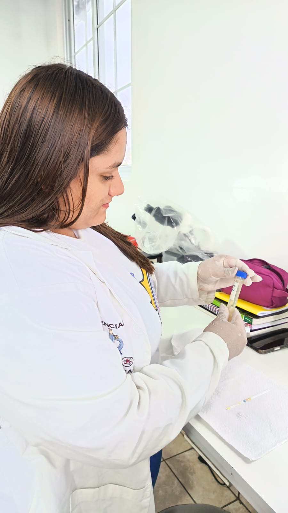
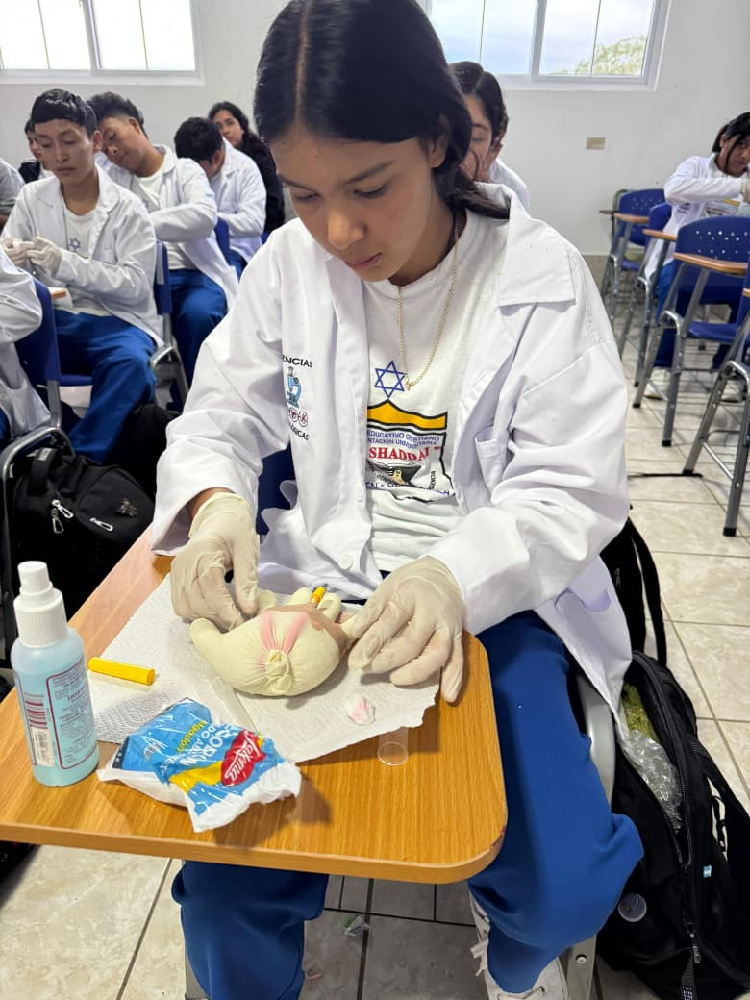
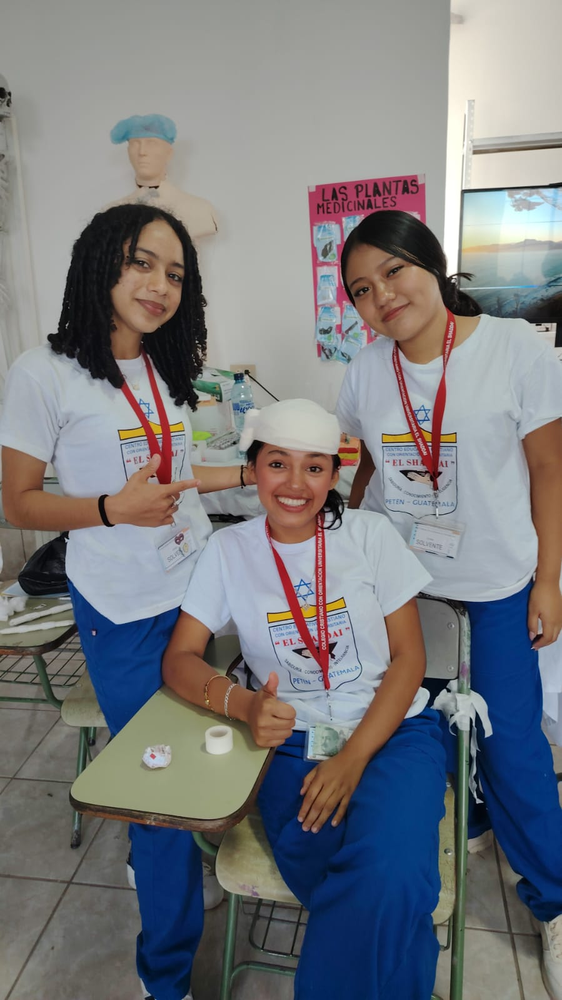
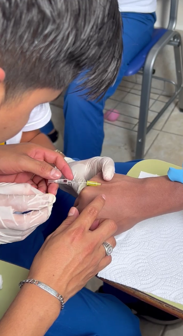
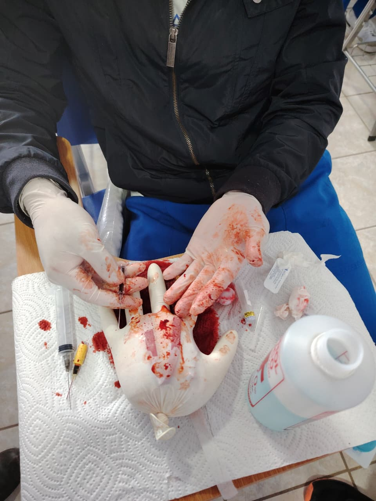

Trabajo práctico guiado
Actividades supervisadas que fortalecen la observación y el uso adecuado de materiales.
En nuestra área de Biología, los estudiantes desarrollan conocimientos científicos, habilidades prácticas y valores que fortalecen su preparación académica y humana. Cada experiencia en laboratorio y cada proyecto presentado reflejan dedicación, aprendizaje y vocación de servicio.
“Porque de tal manera amó Dios al mundo, que ha dado a su Hijo unigénito...”
Juan 3:16

El área de Biología del Centro Educativo Cristiano con Orientación Universitaria El Shaddai promueve el aprendizaje científico a través de experiencias significativas, observación, análisis, experimentación y trabajo en equipo.
Nuestros estudiantes fortalecen sus conocimientos mediante actividades de laboratorio, proyectos educativos y participación en eventos académicos donde demuestran lo aprendido durante su formación.
Desarrollo de habilidades en procedimientos y técnicas de laboratorio.
Comprensión de procesos biológicos aplicados a la vida y la salud.
Educación con principios cristianos, responsabilidad y compromiso.
Las prácticas permiten a los estudiantes aplicar lo aprendido en clase, desarrollar precisión, análisis y seguridad en procedimientos relacionados con el área de Biología.
Actividades supervisadas que fortalecen la observación y el uso adecuado de materiales.

Espacios de aprendizaje donde se desarrollan habilidades técnicas y seguridad práctica.

Ejercicios que ayudan a reforzar la precisión, el control y el trabajo colaborativo.
Cada año, nuestro centro educativo realiza la Expo Feria, un evento especial en el que los estudiantes presentan y demuestran lo aprendido en la carrera de Biología.
Este espacio permite compartir proyectos, prácticas, conocimientos y experiencias, mostrando el esfuerzo, la creatividad y la preparación adquirida durante el proceso educativo.
Fecha programada: 6 de junio de 2026

Conoce a los estudiantes de la promoción 2026 en una página especial dedicada al salón de 4to Biología Sección A.
Ver Promoción 2026Petén, Guatemala
Poptún, Petén, Calzada 25 De Junio, Guatemala
Abrir en Google Maps